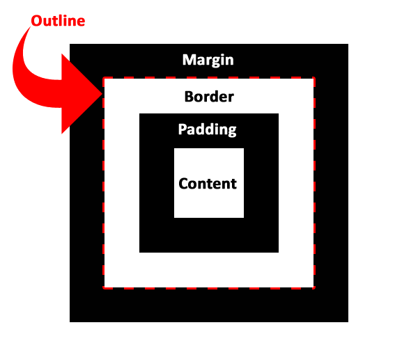
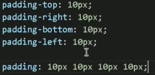
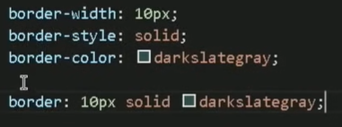
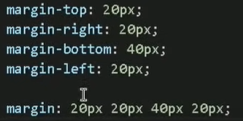
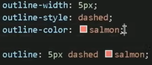

Introdução:

Block ou Inline-Block:
Em geral essa configuração vem padrão de cada tag. Mas se quiser mudar, use: display: [parâmetro];
Se você usar display: flex, pode dizer a orientação dele: flex-direction: [parâmetro];
Padding:
Espaçamento ao redor de um elemento (distância entre um elemento e a borda). Para usar, no .css, use: padding
Para simplificar, usando as principais, pode usar: padding: [top] [right] [bottom] [left];

OBS1: Se as quatro forem iguais, pode simplificar por padding: [tamanho universal] -> padding: 10px, nesse exemplo.
OBS2: Se colocar dois elementos, como padding: [tamanho1] [tamanho2], tamanho 1 = top/bottom e tamanho2 = right/left.
Border:
É a borda da caixa. Para colocar, no .css, use: border
Para simplificar, usando as principais, pode usar: border: [width] [style] [color];

Margin:
É a margem da caixa. Para colocar, no .css, use: margin
Para simplificar, usando as principais, pode usar: margin: [top] [right] [bottom] [left];

OBS1: Se as quatro forem iguais, pode simplificar por margin: [tamanho universal] -> margin: 10px, nesse exemplo.
OBS2: Se colocar dois elementos, como margin: [tamanho1] [tamanho2], tamanho1 = top/bottom e tamanho2 = right/left.
Outline:
Para colocar outline (entre a margem e a borda), use: outline: [width] [style] [color];

Para simplificar, usando as principais, pode usar: outline: [width] [style] [color]
Grouping Tags:
Voce pode usar <div id="[texto]">
Porém, no HTML5, existe outra maneira (mais semântica) de fazer isso, com:
- <header> (cabeçalho)
- <main> (conteúdo)
- <nav> (menu)
- <section> (seção)
- <article> (artigo)
- <aside>(?aside?)
- <footer> (rodapé)
Sombras nas Caixas:
Para colocar sobras nas caixas, tags, use: box-shadow: [horizontal] [vertical] [espalhamento] [cor];
Pode usar DevTools para mexer na sombra.
Arredondar as bordas das Caixas:
Para colocar uma borda arredondada, use: border-radius: [tamanho]
Conteúdo dentro das Caixas:
Para organizar o conteúdo dentro das caixas, use: justify-content: [parâmetro];
Também tem o align-content: [parâmetro];
Colocar Bloco/Caixa no Centro:
Para colocar o Bloco/Caixa no centro, use: margin: auto;. Caso não seja um bloco/caixa, mude com display: block;
Tamanho Máximo e Mínimo de uma Caixa:
- Para colocar um tamanho máximo numa caixa, use:
max-width: [parâmetro]; - Para colocar um tamanho mínimo numa caixa, use:
min-width: [parâmetro];
Espaçamento da linha das frases (de uma mesma tag) dentro de um Bloco/Caixa:
Para espaçar as linhas das frases, use: line-height: [parâmetro];
Centralização de Caixa:
Para centralizar as caixas, veja o PDF. Nele é usado conceitos de position: relative e position: absolute.
Mas existe uma outra forma melhor através do FlexBox.